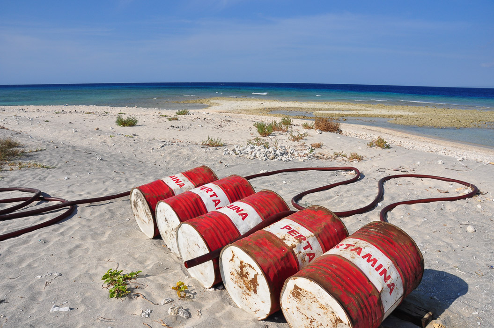
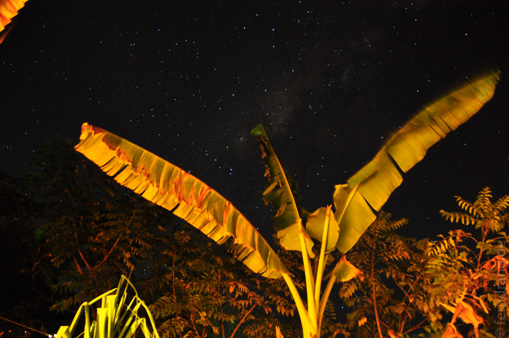
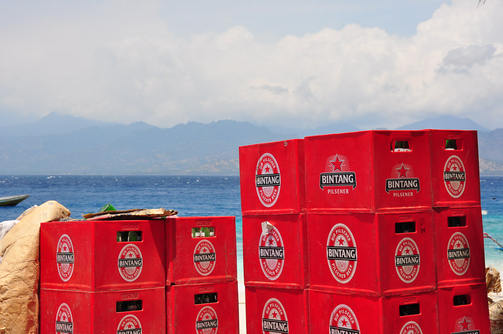
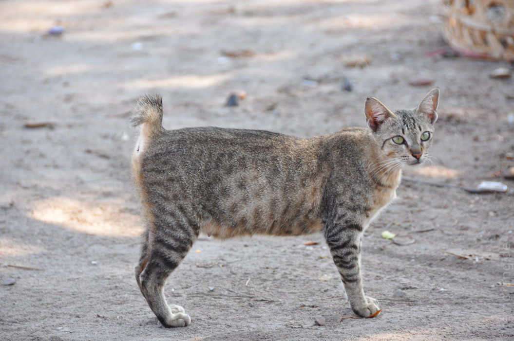

In der Zwischenzeit hatten wir etwas Gelegenheit die Insel zu erkunden. Der Strand ist super hier. Wenn man über die Korallen springt, kann man in perfektem Türkis wässern, bevor das Meer in dunkles Blau umschlägt. Für leicht Entzündliche, wie mich, gibt es auch Schatten spendende Bäume. Keine Wünsche offen.
Der Blick unter die Wellen hat sich beim Schnorcheln allerdings überhaupt nicht gelohnt. Auch die Tauchgänge konnten nicht überzeugen. Da fährt man besser nach Sulawesi!
Als Ersatzprogramm bietet sich eine Inselumrundung an. In zwei Stunden kann man Gili Trawangan gemächlich umschreiten. Auch an den abgelegensten Stellen verstecken sich noch kleine Resorts. Auf der sonnigen Westseite schrumpft man nachmittags Schritt für Schritt zu Dörrobst. Aber der Blick auf das offene Meer lohnt sich allemal.

Abends schlagen wir uns hier regelmäßig die Bäuche mit indonesischen Köstlichkeiten voll. Da gerade Ramadan ist, bleiben wir vom Partyleben verschont. Während des Fastenmonats fährt die Insel einen Gang zurück. Stattdessen erfreut uns der Muezzin, dessen Lautsprecher gefühlt in unserem Zimmer aufgehangen ist, besonders häufig und ausführlich mit seinen Durchsagen.


Ein Geheimnis hat die Insel aber noch: Die schwanzlosen Katzen. Obwohl es hier von Katzen wimmelt, trifft man keine einzige mit vollständigem Schwanz. Lokale Gepflogenheiten? Delikatesse?
